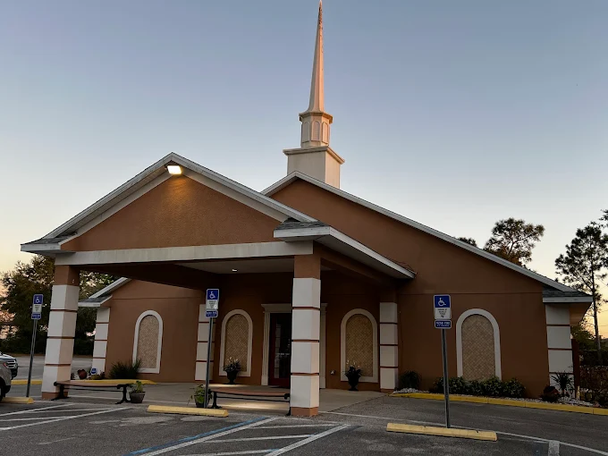

Ministerios
Mujeres
Te invitamos a conocer este ministerio durante tu visita y consultar directamente cómo participar.
Nuestros ministerios
Da tu próximo paso.
Conoce este ministerio y pregunta directamente a la iglesia cómo participar. Los horarios, responsables y detalles de los programas se publicarán cuando estén confirmados.
Planifica tu visitaMujeres
Preguntas para tu visita
La información sobre actividades, horarios y líderes se publicará después de su confirmación por la iglesia.
¿Cómo puedo participar?
Acompáñanos en un servicio y pregunta al equipo de la iglesia sobre este ministerio.
¿Cuáles son los horarios y requisitos?
Llama a la iglesia para confirmar los horarios y cualquier requisito antes de asistir.
¿Con quién puedo conversar?
El equipo de la iglesia puede orientarte durante tu visita. Todavía no publicamos nombres de responsables sin confirmación oficial.
Bienvenido a casa
Nos encantaría conocerte.
Te invitamos a compartir con nosotros un tiempo de adoración, palabra y comunión.
Planifica tu visita